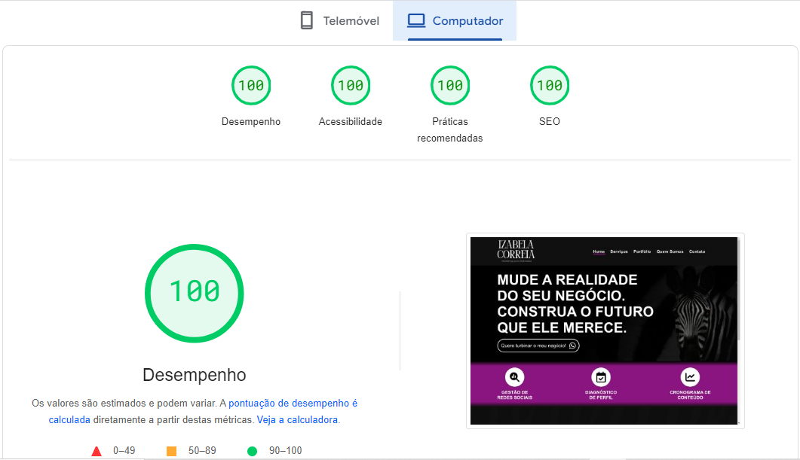

Projeto Izabela Correia

Diafnóstico do site por PageSpeed
O que é PageSpeed?
O PageSpeed é uma ferramenta essencial para avaliar e otimizar o desempenho de um site, desenvolvida pelo Google. Ele analisa diversos aspectos que afetam a velocidade de carregamento e a experiência do usuário, como tamanho de imagens, compressão de recursos, tempo de resposta do servidor, entre outros.
Por que ele é importante?
Obter uma nota máxima no PageSpeed é um indicativo de que o site está bem otimizado e oferece uma experiência de usuário excepcional. Isso não apenas contribui para uma navegação mais rápida e eficiente, mas também pode melhorar o posicionamento nos resultados de busca, já que o Google valoriza sites que oferecem uma experiência de alta qualidade aos usuários.
O próximo é você!
Portanto, garantir uma boa pontuação no PageSpeed não só é importante para o desempenho do site, mas também para sua visibilidade e relevância nos mecanismos de busca. É um passo crucial para garantir que o site atenda às expectativas dos usuários e se destaque em um cenário cada vez mais competitivo online.